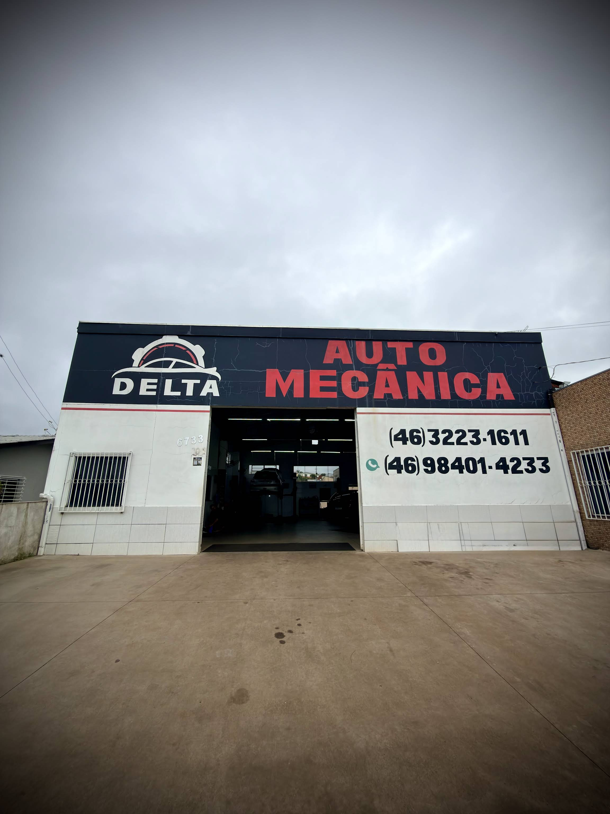
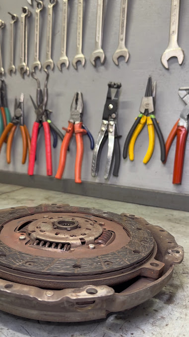

Manutenção mecânica
Manutenção e reparação de veículos automotores, conforme o cadastro público da empresa.

FOTO PÚBLICA · GOOGLE MAPSOFICINA MECÂNICA · AVENIDA TUPI
Manutenção mecânica com agilidade, atendimento elogiado e acesso fácil em Pato Branco.
Clientes destacam profissionais qualificados, agilidade, bom atendimento e uma recepção confortável.
A Auto Mecânica Delta atende na Avenida Tupi, no bairro Alvorada. O cadastro público confirma atuação em manutenção e reparação mecânica, além do comércio de peças e acessórios novos para veículos.
Dados consultados em setembro de 2026.

REGISTRO REAL DO TRABALHO · GOOGLE MAPSManutenção e reparação de veículos automotores, conforme o cadastro público da empresa.
Comércio de peças e acessórios novos para veículos, conforme atividade empresarial registrada.
Converse com a equipe para confirmar o diagnóstico, disponibilidade e orçamento do serviço necessário.
“Excelente mecânica para seu carro, competência e agilidade no trabalho sem contar no atendimento.”
“Profissionais de qualidade. Fui muito bem recebido e muito bem atendido pela equipe Delta.”
“Ótimo atendimento! E trabalho realizado de ótimo, 100% satisfeito.”
Segunda-feira: abertura informada às 08:00. Confirme os demais horários diretamente com a oficina.
Traçar rota ↗Preencha os dados. Ao tocar no botão, o WhatsApp da oficina será aberto com a mensagem pronta.
Abrir WhatsApp sem preencher ↗